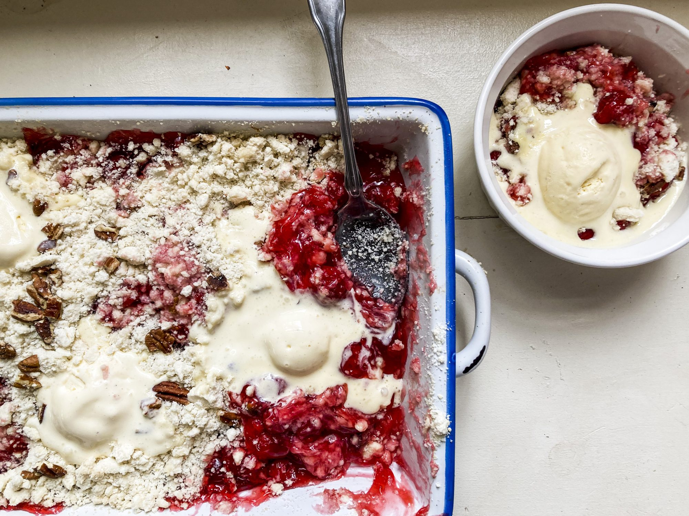

<!DOCTYPE html>
<html lang="en">    
</html>

<head>
    <meta charset="utf-8">

    <title>Cake recipe</title>
</head>
 <body>
    <h1>Cherry Dump Cake</h1>
    

    <p><strong>Description:</strong>Amazingly easy and amazingly good... too good!<br>
         This is my mother-in-law's recipe that was just recently shared.<br>
          It would be a shame not to share it. Best served warm and with vanilla ice cream (of course).</p>

          <h4>Ingredients:</h4>
          <ul>
            <li>2 (21 ounce) cans cherry pie filling</li>
            <li>1 (15.25 ounce) package white cake mix</li>
            <li>¼ cup butter, melted</li>
            <li>½ cup coarsely chopped pecans</li>
          </ul>

          <h4>Steps:</h4>
          <ol>
            <li>Preheat the oven to 350 degrees F (175 degrees C).</li>
            <li>Spread cherry pie filling over the bottom of a 9x13-inch baking pan.<br>
                 Stir cake mix and butter together into a gooey, clumpy mixture. <br>
                 Break into pieces between your fingers and crumble evenly on top of the cherry filling.<br>
                  Sprinkle pecans on top.</li>
            <li>Bake in the preheated oven until golden brown on top, 35 to 40 minutes.</li>
          </ol>
 </body>